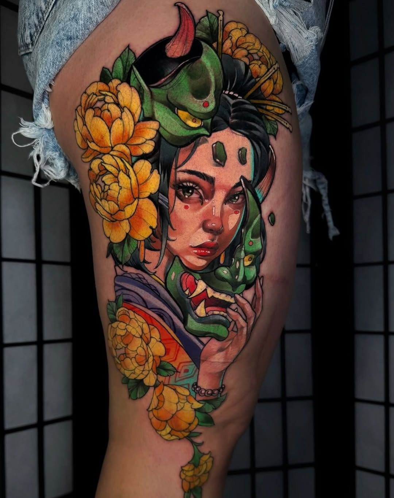

El Artista
Soy Ruben Charre — tatuador de San Luis Potosí, México con más de 15 años en el oficio. Mi estilo tiene raíces en la ilustración neo-tradicional: líneas contundentes, color rico y el tipo de detalle que resiste décadas. Pero más allá de la técnica, lo que me mueve es la historia detrás de cada pieza. Personajes de anime que marcaron una generación. Retratos que cargan duelo y amor al mismo tiempo. Imágenes mitológicas que hablan de quién es alguien en realidad.
Trabajo en Black Soul Tattoo SLP, donde he creado un espacio que se siente más como un hogar creativo que un estudio. Tomo proyectos de largo formato — mangas completas, piezas de espalda, trabajos de varias sesiones — además de piezas en una sola sesión cuando el concepto lo pide. Si buscas a alguien que te pase rápido por un flash, probablemente no soy tu persona. Pero si quieres sentarte, hablar de algo real, y salir con algo que realmente signifique algo, para eso estoy aquí.
Con los años he tenido el honor de tatuar en el Mondial du Tatouage en París, viajando a convenciones por México e internacionalmente, y conectando con artistas y clientes de todo el mundo. Esa exposición afila el trabajo — cada convención es una masterclass para ver cómo otros artistas resuelven los mismos problemas que yo. Pero el hogar siempre es San Luis Potosí. Ahí están las raíces.
